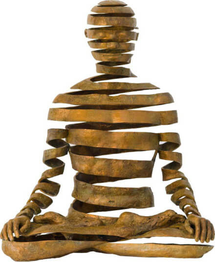
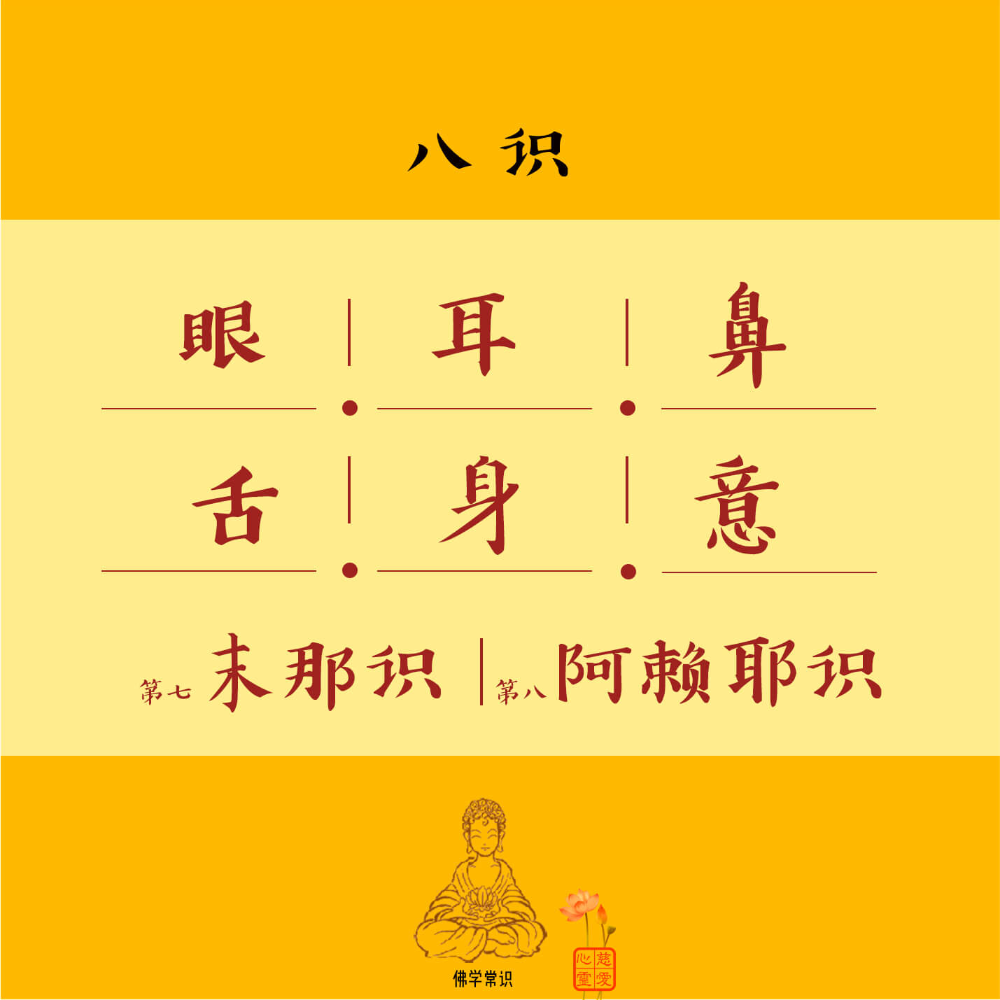
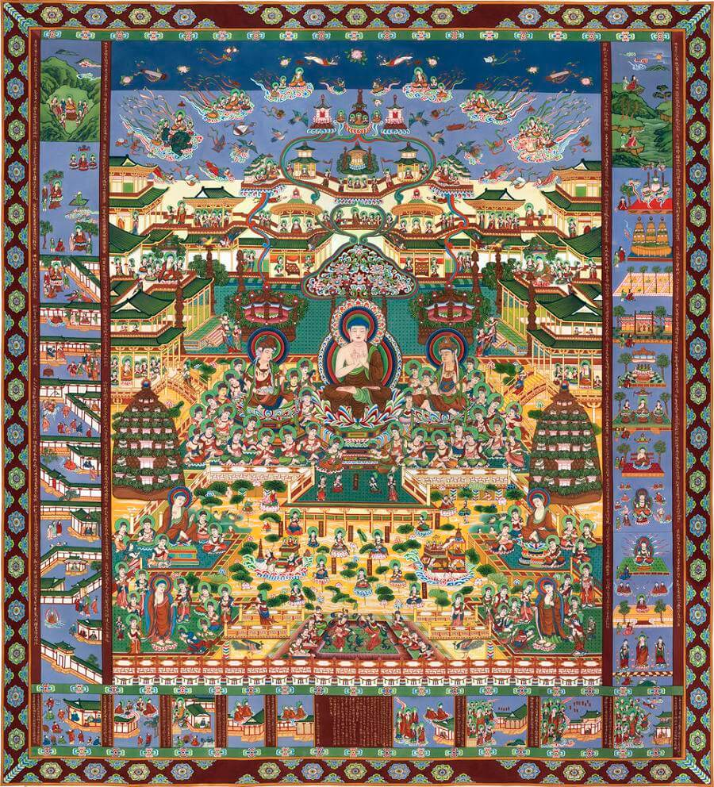

一、开篇
什么是识？就是执着心，分别心，烦恼心，对立心，颠倒心，无明的心。
什么是智？就是清净心，智慧心，平等心，解脱心，自在心，无畏心，无所求心，无所住心。
每个人都在追求快乐，却没有几个人真正了解快乐是什么。大多数人的快乐不能离开财、色、名、食、睡。唯有佛陀的弟子以法为乐，以人生、宇宙的真理为快乐。所以，人的一生当中如果没有听到佛陀的正法，不是不幸，是生命中的大不幸，过得很悲哀，一生一世都不知道生命的真相是什么。
大家能遇到佛法，尤其是系统的学习佛法，是真正的大福报。我们一定要转识成智，转烦恼成菩提，一定要有透视的力量，就像佛眼，一照，万法皆空，凡所有相，都是虚妄，都是因缘和合，都是短暂的，都是生灭，都是无常的，都是无我的。
二、无常、苦、空、无我
世人总觉得人生充满了快乐，很多人一生也都在追求快乐。但只要身为一个人，他的苦就没有办法停止。《阿含经》中说，我们要把这个色身，观照成一颗肿瘤，这颗肿瘤碰到就痛，我们脑瘤，淋巴癌，脑癌，喉癌，肺癌，胃癌，肠癌，肝癌，脾脏癌，皮肤癌，没有一个地方不会溃烂，没有一个地方不会败坏。
佛陀说，万法皆是败坏之相，没有永恒。可是离开了这个刹那生灭，无常的败坏之相，你又求不到永恒，放下那一念就是永恒，离开生灭，找不到不生不灭，难就难在这个地方。想要转识在智，一定要照见五蕴皆空。
《圆觉经》中说：恒观四大无我，速疾成就阿耨多罗三藐三菩提。
二十四个小时都要识认自己这个身体，根本没有任何真实性，它是很脆弱的。再分析看看，我们全身什么构成的，就是四大：地、水、火、风。地就是坚固的东西：骨头，指甲，头发，肌肉，筋，脉等等，叫做地大。水大：血液，尿液，唾液，等等这一些，汗，排汗，水分。火呢？就是温度，身体有体温。风呢？就是呼吸，全身分析开来，地、水、火、风，根本找不到一个“我”，而我们这个妄执是很可怕的，每个人都有妄想，每个人都有理想，每个人都有梦想，却不明白因缘生的如梦幻泡影的这个我和外面的世界并不真实，如果执着以为实有的，问题就会层出不穷。
我们如果了悟缘起无自性，一切法无我。真正的无我是空无自性，没有永恒性。《楞伽经》中世尊叫我们作如是观察，看到一切相，都把它磨成粉末状。比如一个大美女，观照一下，头发剃掉，皮肤剥掉，刀子刻一刻，剩下骨头，晒干磨成粉末状。呼！这个美女不存在，她现在缘起，缘起就存在，佛法奥妙就是这个地方，既现实又超越，既超越又现实，你就开始懂得怎么样来用这颗心，否则每天都有妄想心、颠倒心。
很多事情经常让我们生气，佛陀说：真有这一件事情吗？好好地想想看，你今天拥有的房产、金钱，都会随着时间消失，因为它是无常，所以一定会消失。
我们来到这个世间，不曾拥有过任何东西，我们来到这个世间，也从来没有失去过任何东西。拥有跟失去都是错觉。
因为业力的关系我们要生存，我们因为生存，就必须斗争，我们因为斗争，就必须贪爱，我们因为贪爱，就会占有，因为占有，就会引发杀机，本来的佛性就变成畜生，恶魔。
同样一个人，有的人慈悲得像佛菩萨，有的人实在很残忍。同样一个人，因为心境不同，所过的日子完会不一样。我们大家统统坐在这里，你一张脸，我一张脸，看起来没什么两样，虽然有差别，同样是人，可是我们今天所过的日子完全不同。佛陀所过的日子和我们就不一样，因为他的心很平静，了解本来无一物，何处惹尘埃？了悟当体即空，缘起无自性，一切法无我，了解天地万物总是不可得。大彻大悟，悟到什么？悟到身心世界不可得。

三、梦幻泡影
要记住，眼睛所看的，耳朵所听的，统统是如梦幻泡影的东西，没有一样是真实的。大家好好观想，我们现在用一个强大的力量观照，把眼前这个人观想剩下白骨，大家观想一下，每个人剩下一堆白骨，一堆白骨坐在这个地方。说法者，无有能说，无所说。听闻佛法，也无有能闻，所闻。所以佛陀说：一切法，无所有，不可得，毕竟空。
学会观照，就是要透视生命的本质是虚妄的，不实在的。我们每天寄托在明天的快乐，而不知道现在拥有智慧，每一分，每一秒统统可以过得很快乐，这个就是转识成智的重要。
要彻底放下对假相上的执着，才能转识成智。
识就是执着，非常坚定的执着，毫不考虑的就说，这是我的，这个是我的房子，这是我儿子，这是我，我们二十四个小时，都一定是“我”，包括晚上睡觉做梦，统统非常强烈的执着一个“我”。学佛的人就执法，执着一个法。因为没有大彻大悟，所以学净土法门的人，就认为念佛最好，叫你念阿弥陀佛就好，其它经典都不要看。学禅宗的就说：自性自度。学密宗就说，你们太慢了，我这个三密相应。持戒的就说，戒为无上菩提本，应当一心持净戒。
法师各有知见不同，信徒初学佛法，听得一头雾水，嘴辱还要振动，要听谁的？告诉大家：开大般若智慧！禅，净，律，密，华严，天台，唯识，统统要开大般若智慧，没有大智慧，看你怎么念佛？念了几句，烦恼；念了几句，执着；念了几句，痛苦，种种痛苦的回忆。所以，都需要大般若智慧。
这个“识”就是分别诸法，强烈的执着不放，在千差万别的假相，强烈的执取，种种的烦恼，无量无边的烦恼，如果我们有了大智慧，就可以入于平等的心性，万法平等，毕竟空寂。

四、八识分类
兄弟八个一个痴，其中一个最伶俐，五个门前做买卖，一个往来传消息。
一个痴，是第八识，不管好坏它都接受。最伶俐，是第六识，它分别能力最强。门前做买卖的，就是眼、耳、鼻、舌、身，眼见色、耳闻声、鼻嗅香、舌尝味、身触境，都是对外的。往来传消息的，就是第七识，接受前面六识传给它的信息，送往第八识里藏起来。
八识都要转成四智，也就是说，要圆成三身四智，才能成佛，不是一悟道就成了，还差得远呢，要好好用功才行。
四智是由八识转的，叫转识成智。转第八识为大圆镜智，转第七识为平等性智，转第六识为妙观察智，转前五识为成所作智。八识转为四智，要分四步，就是“六、七因中转，八、五果上圆”。我们现在在事境中做断除习气的功夫，就是转六识、七识。
转第六识就是把我们的分别心，转成不分别而只观察的心。我们生来就喜欢分别，这个怎么样，那个怎么样，好的要，坏的就不要，人我是非太多，一天到晚都在分别当中生活，所以妄念纷飞、生死不了。
第七识是传送识，就象单位的门房，把六识送来的信息都传到第八识里去。
第八识是储藏识，就象单位的仓库，接受第七识传来的信息，把它藏在里面。第八识的种子多得不得了，多生历劫的种子都在里面。要把这些种子都断掉，这可不容易，要到十地菩萨才能断光。
“六、七因中转，八、五果上圆”，就是现在因地修行时须着力转换六、七识，才能进而转换八、五识，圆成佛果。也就是说，第八识和前五识要到后来才能转成大圆镜智和成所作智，从而圆证佛果。现在一切众生的第八识是昏暗的，它什么东西都要，不论好坏，它都抓住不放。到大圆镜智时，它就只照不动了，就不要了。前五识就是眼、耳、鼻、舌、身，他是对外的。

五、解脱关键
前面这些道理，都是佛教徒容易知道的，但是生死问题如何解决呢？学佛从何处下手呢？很多佛教徒都一片茫然，实际上佛陀把这些道理讲得很清楚。
一个是竖出三界，就是通过学禅、学密，把我们执着的习气，贪、嗔、痴都消了，就出去了。一个是横超三界，就是净土法门：念佛，借助阿弥陀佛慈悲接引往生西方极乐世界。
现在很多人学禅、学净、学密等，但对于自己临终是否有把握解脱，则完全不知道如何验证。其实还是有办法，就是两头取证。一是顺境时是否得意忘形，忘乎所以，佛号（修行）一点也提不起，只知道开心、快活。一是逆境时是否痛苦不堪，提不起佛号（修行），这两种情况都是危险信号。
可能有人念佛的人会问：恐怕不对吧！我们死后中阴身出来，佛要接引我们的，不是就有把握了吗？
唉！要知道佛肯定不说谎话、假话、不打妄语，佛是一定会来接引我们。但是由于我们颠倒烦恼执着的缘故，就像喝醉酒的人，昏昏迷迷的，佛来接引我们，我们却看不见，那我们怎么去呢？所以莲池大师说：念佛者多，生西者少。为什么呢？因为念佛的心不真切。嘴上念佛，脑筋、思想却在不断地乱转，想这想那，很多老太婆、老太公一面念佛，一面还在说张家长，李家短，这样念佛能起什么作用？
佛陀教导我们：执持名号，若一日、若二日……乃至七日，一心不乱，彼佛现前。我们若能一心不乱，就看见佛现在我们面前了，我们心乱糟糟的，佛即使来了也看不见！
永明寿禅师说得很清楚：念佛人的心，好比一盆水，佛就等于天上的月亮。水清净了，月亮就现在里面了。我们心乱，即如这盆水浑浊，月亮就现不出来，我们也看不见佛。佛是无所从来，亦无所去的，只不过在我们心中现出形像叫如来。净土宗的行人，净业成熟，快要往生时，佛就在他心中现起形像，我们念阿弥陀佛，佛就在西方现形应我们，故名感应道交。说到佛现象接引众生也有等级，因为功夫不同，所见相就不同，所以往生西方分九品。下品人只能见到化身佛，中品人看见报身佛，上品人才能见到法身佛，也就是常寂光佛。
六、三种实证
修法、了生死，有三种实证功夫。
第一种我们真能做到念起不随，念头一起就化去，毫不停滞，就象水上画图一样，在水上一划，水就合拢了。没有一点影子，没有一点痕迹。如鸟过长空，无有行迹，就能于生死岸头得自在，要到哪里就能到哪里，不为业力所支配，就是受生自在。
第二种，我们能够于前面讲过的两种境界，好的一头，坏的一头，都是平平常常，一点也不波动。我们的心没有好的喜欢，不好的就烦恼，那么分段生死就了了。
做到第一种，念起不随，就能做到受生自在。“受生”，就是投胎能作主了，要到那里就到那里，要到西方就到西方，要到东方就到东方，不受业力的牵缠，自己能作主了。做到第二种，心不随境牵，即能变化自在，了脱生死了。
第三种是微细流注断灭，一切化空，唯有圆觉大智现前，就能现百千万亿化身，度百千万亿众生了，这就是一切用功人修法证道的真实验证。
七、入手方便
六根中意根最重要，修行人要转识成智，不是从前面五识开始转，而是从六识开始，是转这个意根，意根清净了，前五识也就自然转过来。
六祖大师说：六七因中转，五八果上圆。
第八识和前五识到最后才圆满。转识首先要转第六识，意根清净之后，第七识也就清净了。第七识又名传送识，它是染净依，把六识吸收的尘相传送给第八识。六识清净了，七识也就跟着清净；六识染污，七识也跟着染污。
净土宗的念佛法门，就是从第六根上修起，把一句佛号牢牢印在意根上，就这样“阿弥陀佛， 阿弥陀佛……”，不停地念下去，久而久之，原来颠倒的妄念，就会清净下来，叫做六根清净。平时第七识传送进去的，都是贪嗔痴、杀盗淫，第七识就被染污了，就把那些污秽龌龊的东西往八识田里面放。念佛法门就是让大家在无形当中把心转过来，把本来是污染的种子转成清净的种子， 一句句的阿弥陀佛输送到第八识，这样八识田里就藏满了佛的种子。
打了个比方，用功好比往罐子里放火药，今天放一点，明天放一点，放到一定的时候，嘭！就爆炸啦。念佛也好，参禅也好，修密也好，都是这个道理。念佛法门就是把佛种子往里放，放、放……放到饱满了、饱和了，就身心脱开，证到念佛三昧了。
有一些念佛的老太太不懂得这个道理，当念佛念到身心脱开，连个佛号也不可得的时候，她反而害怕了： 哎呀！我是仗佛的力量升西的，现在连佛都没有了，这可怎么好？害怕得退了回来。这时候要有师父指点，告诉她这个是好消息，这是你的心地在发光，叫“花开见佛悟无生”，也就是心花开放，见到你的本性佛，你要悟到无生法忍了，不要怕！把你的心浸在里面，大胆地走过去。
禅宗参究“念佛的是谁？念佛的是谁？……”追到疑情消竭，行不知行，坐不知坐，嘭！疑尽爆发，打开本来，桶底脱落，见到本性。
密宗的修法也是这样，依靠佛力三密加持，功夫深到这个程度，就象有人在后面助你一臂之力，推你到悬崖边，嘭地一下！虚空粉碎，大地平沉，顿见本真。
转识成智都要转第六根，由于用功方法不同，所以初下手选取的根也不同：密宗和禅宗都是从第八识下手，而净土宗则是从第六识下手。